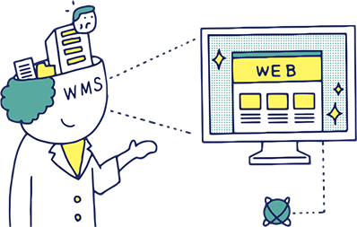
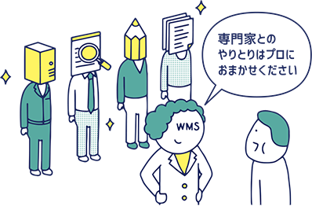
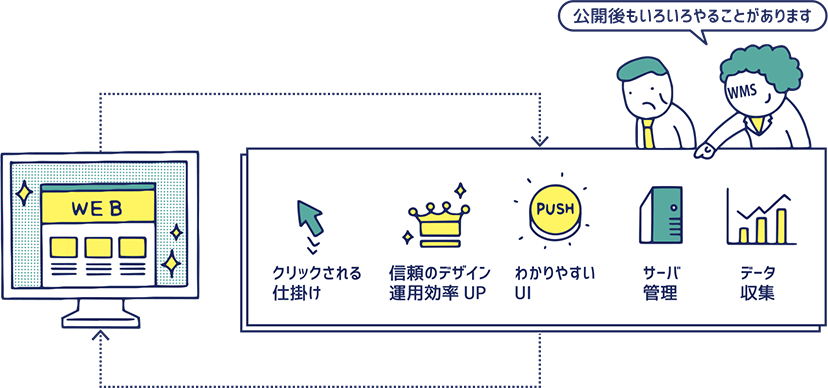

私たちの姿勢Philosophy
- HOME
- 私たちの姿勢-Philosophy
私たちは「伝わるサイト」を
構築する会社です
Webサイトはどんな目的で構築されるにせよ、何かの情報を伝えるための手段です。しかし、伝えようという意図と伝わったという結果は、なかなか一致しないのが現実。私たちは、クライアントのビジネスを理解し、Webサイトのユーザである訪問者の視点に立つことで「伝わるサイト」を構築する会社です。

クライアントを理解してはじめて作れる
伝わるサイトの構築に向けて、私たちは、クライアントのビジネスやクライアントのお客様について、理解することから始めます。実際にWebサイトを作るのは私たちで、その私たちが理解している以上のことはWebサイトで伝わらないからです。どのようなことを大切にしているのかという価値観や経営理念、それを裏付ける成長の歴史までを知った上で、課題や問題を共有します。また、そのような私たちの取り組み方をクライアントに理解して頂き、信頼を築くことも同じく大切です。私たちはひとつのプロジェクトで一緒に成功を目指すパートナーとして行動します。
経営視点、顧客視点、ビジネス視点
コンテンツを考え始めると、あれもこれもと盛り込みたくなります。どれも重要な情報だし、どれも売りたい商品だと。しかし、訪問者にとって、情報の洪水は無いのと同じ。大切なことは、Webサイトにアクセスした人が実際に商品を購入してくれたかどうかであり、資料請求した見込み客がお金を使う顧客になったかどうかです。そのために、Webサイトそのものだけでなく、Webサイトとつながる業務全体に目を向け、顧客が望んでいることを理解し、芸術作品ではなくビジネスツールとしてWebサイトを位置づけて取り組むことが大切です。
クライアントの立場で
幅広い専門性を発揮します。
Webの構築では文章やデザインだけでなく、コンピュータシステム、マーケティング、サプライチェーンなどクライアント業務に関わるさまざまな専門知識を有機的に理解していることが求められます。不整合があればたちまちトラブルの原因にもなります。私たちはWebの構築に関する専門知識を持つだけでなく、クライアントの立場に立ったサービスを提供します。

クライアントとの役割分担
タクシーに例えるなら、私たちはクライアントを目的地にご案内する運転手です。目的地を指定していただければ、地理的な専門知識と日々蓄積される道路事情を考慮して最適なルートで運転します。また、高速道路を使って費用を掛けても早く行く方がよいのか、一般道路がよいのか、お客様の状態によってはゆっくりとした負担の少ない運転がよいのか、クライアントにとっての具体的な選択肢をご提案することで専門性を発揮します。
目的はクライアントが決め、私たちウェブマスターズが段取りをする、これが理想的な役割分担。クライアントが自身のコア業務に集中できるように支援いたします。
成果物だけでない私たちの存在価値
クライアントにとっての業務委託先の価値は、成果物だけでは判断できません。成果物が完成するまでのプロセスで、クライアントの負担を減らすことも大切です。たとえば、打ち合わせすべき内容に漏れがあれば、打ち合わせの回数が増えます。認識にズレがあれば、作業の手戻りが発生します。新しいアイディアが求められる場面で、下調べやそのまとめ、分析をどちらが行うか。入手ルートが分からない素材を、どちらが探すか。
そういった違いによって、Webサイト構築で最終的な出来栄えや品質が同じだったとしても、クライアントにとっての業務委託先の存在価値はまったく違ってきます。
ゴールへ導くノウハウとツールを提供いたします。
目的を達成し成果を上げるためには、公開後も常に新鮮な情報を提供し、継続的に改善される仕組みが大切です。Webサイトは構築したら終わりではありません。むしろ、構築してからが始まりで、構築までと同じくらいのエネルギーを使った取り組みが成否を左右します。私たちは、構築されたWebサイトがその後も伝わるサイトとして機能するよう、公開後の運用まで考え、かかわっていきます。

最適ツールとノウハウで効率的な運用体制を構築
伝わるサイトにとって大切な情報の鮮度を維持するには、新しい情報をスピーディーに掲載することが必要です。それには、クライアント自身で更新することが一番。しかし、そのためHTMLを勉強したりファイル転送の方法を覚えたりすることは大変ですし、ファイルの管理で事故を起したり、サイトの品質に問題を出したりしてはいけません。
私たちは、これまでに多くのWebサイトを運用してきた経験から、クライアントそれぞれの運用やリテラシーに適した更新ツール（CMS）を開発し運用に組み込むことで、クライアントのニーズに適した運用体制を構築します。
進化し続ける継続的改善の仕組み
じっくり検討したWebサイトでも、思ったような効果が出ないことがあります。Webサイトの構築では、さまざまな仮説やアイディアを検証できないまま実施することが多いのです。しかし、いつでも低コストで更新できるのもWebサイトの特徴。紙と違って、公開後も改善を繰り返すことができます。継続的な改善の仕組み（いわゆる”PDCA”）を回しましょう。
閲覧者の行動を記録したアクセスログを分析したり、売り上げや資料請求の変化を追ったり、お客様の声を検証したりする中から、改善のアイディアが湧きだし、より伝わるサイトとしてパワーアップします。